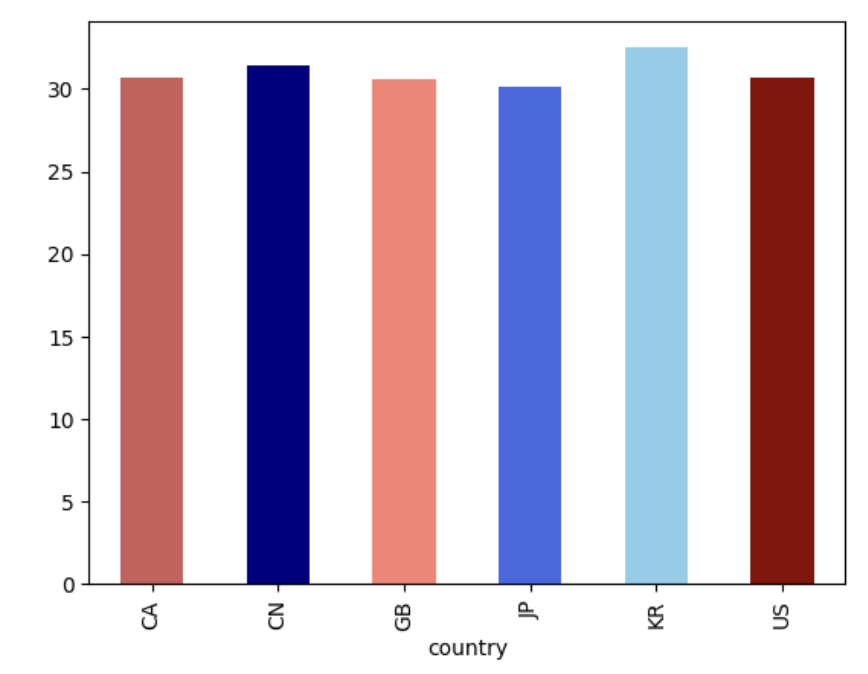
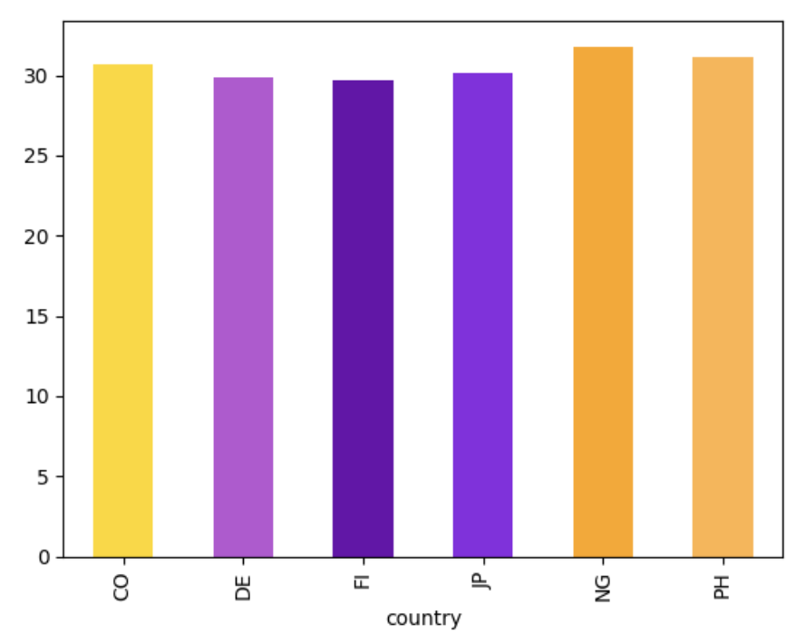
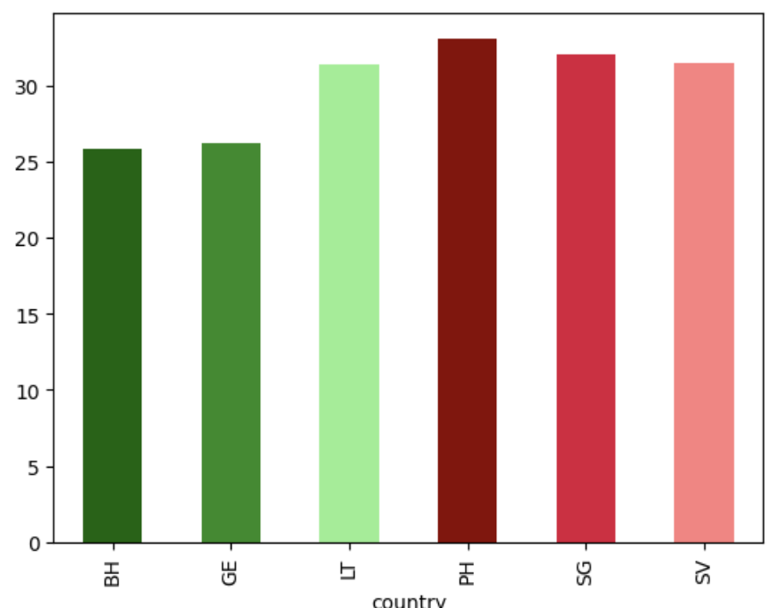
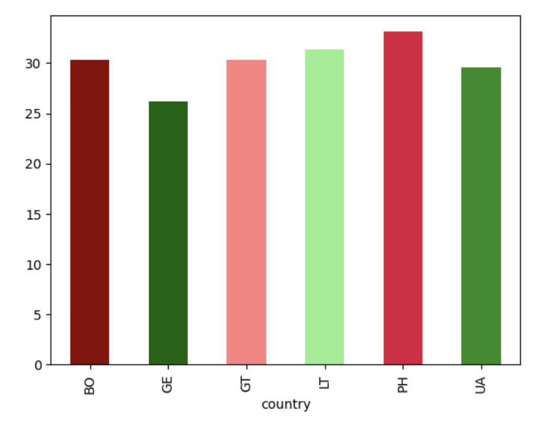
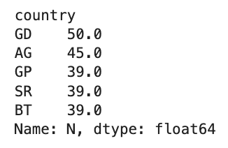
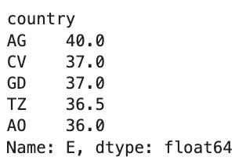
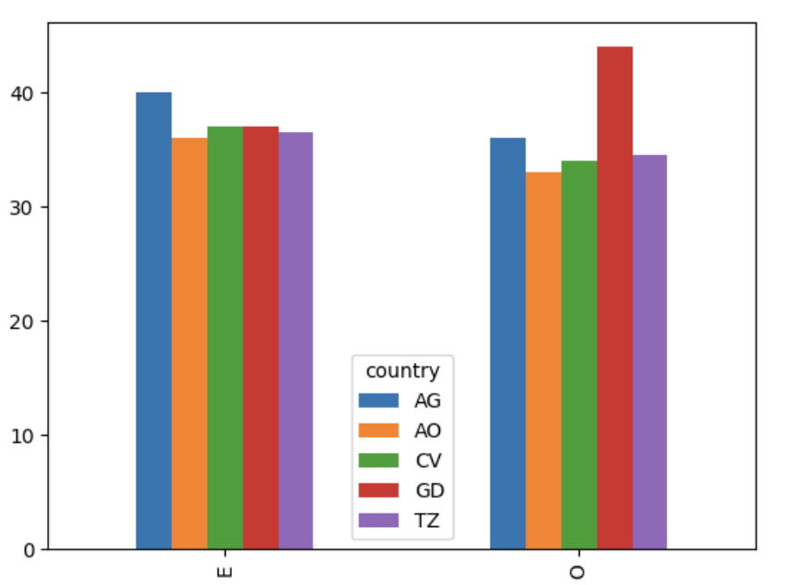
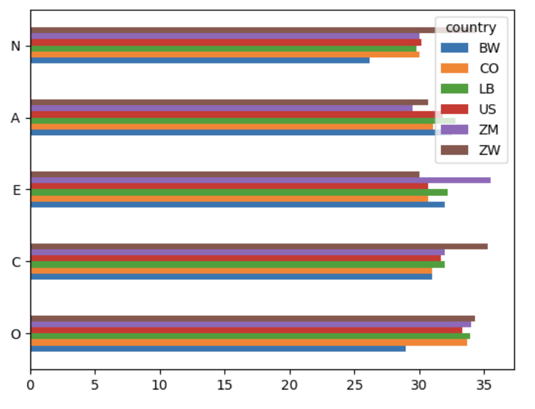

asian_white = (
big5_scored_df
.query('country in ["CN","JP","KR","US","CA","GB"]')
.groupby('country')['E']
.mean()
.round(1)
)
asian_white.transpose().plot(
kind='bar',
color=colors
)My Post
I was very fascinated by the Big 5 scores in relation to countries. Needless to say, I spent a lot of time searching ISO codes, in order to identify the countries I was interested in investigating. I also did a lot of external research.
Background
- I am half Chinese, and half White. As such, I’ve attended family reunions and gatheringsa throughout my life on both sides. On an aggregate level, I’ve found that many of my white family members have been more open and extroverted, compared to my Chinese relatives. I’m also aware that there is a stereotype for Asian countries to be more reserved than their Western counterparts. I tested this.

Results
- I really didn’t see much of a difference between Asian (blue) and Western (red) countries, infact Korea ranked higher than any of the Western countries
Extroverted Countries
- I decided to then search the most and least “extroverted” countries in the world… this is what I found
- Most Extroverted: Phillippines, El Salvador, Bahrain, Oman
- Least Extroverted: Singapore, Georgia, Lithuania, Russia
extrovert_countries = (
big5_scored_df
.query('country in ["CO","NG","PH","FI","JP","DE"]')
.groupby('country')['E']
.mean()
.round(1)
)
Results
- Clearly this wasn’t exactly what I was looking for. The “least extroverted countries” only scored mildly lower than the “most extroverted countries”
“Emotionally Stable” Countries
Upon searching for “emotionally stable countries” on Google, I instead found a Forbes article with “emotionally aware” countries, so I gave that a shot.
This is what it said:
Most Emotionally Aware = Phillippines, El Salvador, Bahrain, Oman
Least Emotionally Aware = Singapore, Georgia, Lithuania, Russia
emotional_stability_countries = (
big5_scored_df
.query('country in ["PH","SV","BH","SG","GE","LT"]')
.groupby('country')['N']
.mean()
.round(1)
)
Results
- This data was more conclusive, with an obvious indication that emotionally aware countries (green) have lower Neuroticism (N) scores than non-emotionally aware countries (red)
Most Emotional Countries
In the interest of exploring a bit further, I found out that Gallup condcuts a study every year on the World’s Emotional Health on 148 countries
Latin Americans were among the most emotional, and former Soviet Union countires dominate the least emotional spectrum.
Here is what the Gallup data said..
Most Emotional Countries: Bolivia, Cambodia, Phillippines, Guetamala
Least Emotional Countries: Georgia, Ukraine, Lithuania, Mongolia
emotional_countries = (
big5_scored_df
.query('country in ["BO","PH","GT","LT","UA","GE"]')
.groupby('country')['N']
.mean()
.round(1)
)
Results
- I was a bit confused by this, and continued to have inconclusive results. For example, Lithuania was thought to be one of the least emotional countries, yet ranked very high in Neuroticism.
- I wanted to have a better understanding, so I sorted which countries actually ranked the lowest in emotional stability- out of curiosity.
big5_scored_df.groupby('country')['N'].mean().sort_values().head(5)
big5_scored_df.groupby('country')['N'].mean().sort_values(ascending=False).head(5)
Results
- The countries with the lowest N score were: Angola, Cape Verde, Ethiopia, Guam, and Syria
- The countries with thee highest N score were: Guadeoupe, Antigua and Barbuda, Grenada, Suriname, and Bhutan
Extraversion and Agreeableness
- Lastly, I was interested in the intersectionality between Extraversion and Agreeableness, as they are thought to be mildly correlated.
- I first sorted the countries with highest extravertedness
- Then I graphed those countries in terms of “E” and “O”
big5_scored_df.groupby('country')['E'].mean().sort_values(ascending=False).head(5)
Results
- Antigua and Barbuda, Cape Verde, Grenada, Tanzania, Angola were found as the countries with highest “E”
- I graphed these results along with Agreeableness
e_and_o = (
big5_scored_df
.query('country in ["AG","CV","GD","TZ","AO"]')
.groupby('country')[['E','O']]
.mean()
.round(1)
)
Next Steps
The last thing I wanted to do was pick out the 5 “happiest” countries and 5 “unhappiest” countries, and see how they stack up with all of the variables of OCEAN
I wanted to stick the US in there as well
According to google search…
Happiest Countries: Finland, Denmark, Iceland, Sweden, Israel
Unhappiest Countries: Afghanistan, Lebanon, Sierra Leone, Congo, Zimbabwe
Happiest Countries + USA
happiest = (
big5_scored_df.query('country in ["US","FI","DK","IS","SE","IL"]').
groupby('country')[['O','C','E','A','N']].
agg('mean').
round(1).
transpose().
plot(kind='barh')
)
Unhappiest Countries + USA
unhappiest = (
big5_scored_df.query('country in ["US","LB","BW","CO","ZM","ZW"]').
groupby('country')[['O','C','E','A','N']].
agg('mean').
round(1).
transpose().
plot(kind='barh')
)
Note: Afghanistan and Sierra Leone did not have data so I substituted Zimbabwe and Botswana
Conclusion
- At a country level, happiness appears to be more strongly associated with emotional stability (low N) than with being extroverted
- Extraversion, agreeableness, and conscientiousness (not as cleanly) do NOT predict happiness
- There is slightly higher Openness in happier countries
- Neuroticism seems to be key, across the board